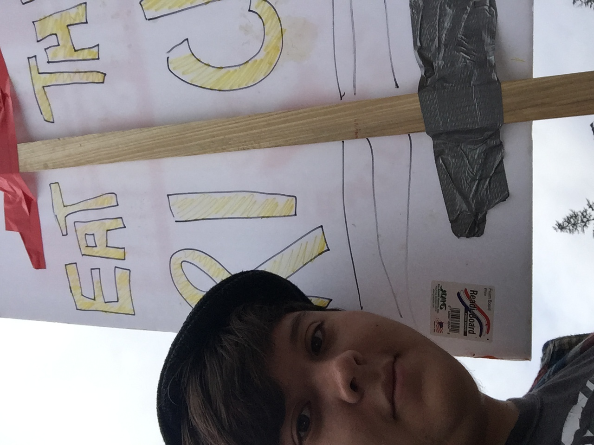

About Me
Ethan Chen is a third year in UC Santa Cruz. Originally in a CS: Game Design major, he has since fallen from grace and now aims to switch to an AGPM major. He has worked as a wiki editor for various mods of games which are listed below. My interests are sci-fi literature, games (often but not exclusively indie), and writing weird stream-of-consciousness stories called Chartings of a Corner.
